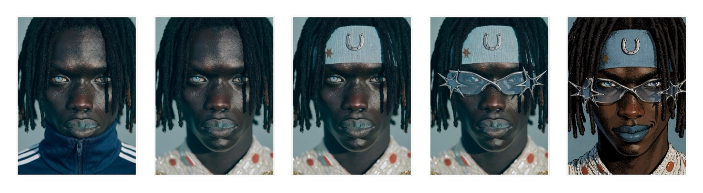
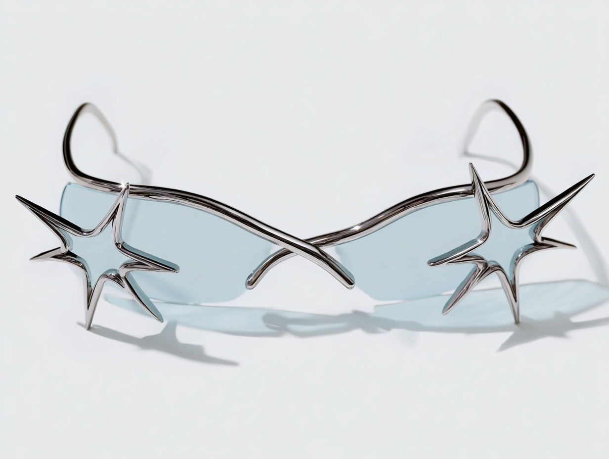

Image / concept campaign
Gentle Monster x JoJo
Two universes that already share a language — extreme silhouette, absolute confidence — put in one frame to see which of them blinks.
- Year
- 2026
- Kind
- Image
- Role
- Concept, art direction, generative production
- Frames
- 9:16 reel, 4:3 product stills
The format problem
A look assembled one element at a time.
The campaign argues that the eyewear is not an accessory but the last piece of a character. So the reveal is staged as a build: same face, same light, one addition per frame.


Structure
What if these two collide?
The crossover is argued in three moves, each one pushing further from photography and closer to the page.
-
Act I
The object
Chrome, star-spiked, and already closer to a Stand than to a product.
-
Act II
The wearer
A figure built element by element until the eyewear is the only thing left to add.
-
Act III
The panel
The photograph gives way to ink, and the campaign lands inside its source material.
How it was built
Pipeline.
Boarded as a crossover, generated as a continuous character, and finished with an illustrated pass so the last frame reads as a panel.
Reference, wardrobe, and the order of the build held on one Figma board.
Midjourney for the sculptural eyewear and for each state of the character build.
A final illustrated pass, so the closing frame lands as a comic panel rather than a photograph.
Vertical cut for feed, with the product still carried at full width.
Open the work